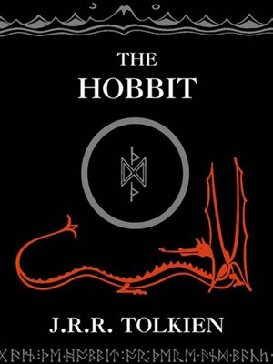
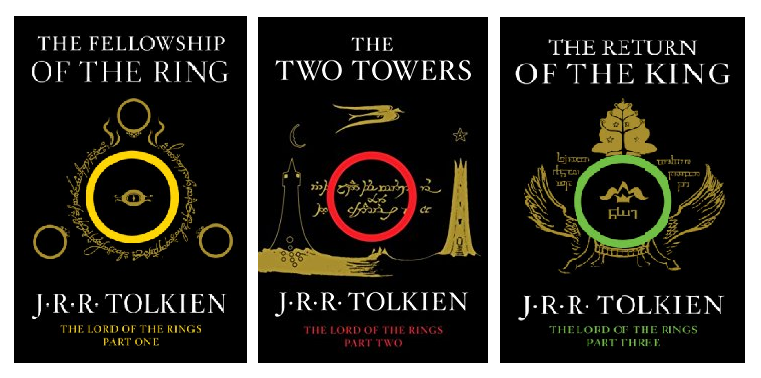
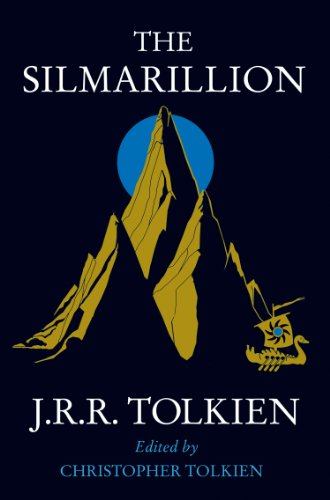
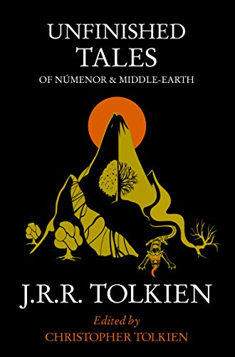

The Hobbit
"In a hole in the ground there lived a hobbit. Not a nasty, dirty, wet hole, filled with the ends of
worms and an oozy smell, nor yet a dry, bare, sandy hole with nothing in it to sit down on or to
eat: it was a hobbit-hole, and that means comfort."

Tolkien, a professor at Oxford University at the time he began writing the book, said that it began from
a single senseless sentence ("In a hole in the ground there lived a hobbit") scrawled on an exam
paper he was grading. When he began, he did not intend to connect the story with the much more profound
mythology he was working on.
However as Tolkien continued writing it, he decided that the events of
The Hobbit could belong to the same universe as
The Silmarillion, and he introduced or mentioned characters and places that figured prominently
in Tolkien's legendarium, specifically Elrond, Gil-galad and Gondolin. Taken into consideration with
the rest of Tolkien's work,
The Hobbit serves as both an introduction to Middle-earth as well as a narrative link between
earlier and later events as told in
The Silmarillion and
The Lord of the Rings, respectively.
It has been suggested that
The Hobbit can be read as a bildungsroman in which Bilbo matures from an initially insular, superficial,
and rather useless person to one who is versatile, brave, self-sufficient, and relied-upon by others
when they are in need of assistance. However Tolkien himself probably did not intend the book to
be read in this way. In the foreword to
The Lord of the Rings he writes, "I cordially dislike allegory in all its manifestations, and
always have done so since I grew old and wary enough to detect its presence." He claims that
The Lord of the Rings is "neither allegorical nor topical". It seems safe to assume that
The Hobbit was written with the same caveats. The judgement of Bilbo as "superficial" and "useless"
seems harsh since he was, according to Tolkien, rather typical of hobbits in general.
Go to top
The Lord of the Rings
J.R.R. Tolkien's
The Lord of the Rings trilogy is a genuine masterpiece. The most widely read and influential
fantasy epic of all time, it is also quite simply one of the most memorable and beloved tales ever
told.

Originally published in 1954,
The Lord of the Rings set the framework upon which all epic/quest fantasy since has been built.
Through the urgings of the enigmatic wizard Gandalf, young hobbit Frodo Baggins embarks on an urgent,
incredibly treacherous journey to destroy the One Ring. This ring - created and then lost by the
Dark Lord, Sauron, centuries earlier - is a weapon of evil, one that Sauron desperately wants returned
to him. With the power of the ring once again his own, the Dark Lord will unleash his wrath upon
all of Middle-earth. The only way to prevent this horrible fate from becoming reality is to return
the Ring to Mordor, the only place it can be destroyed. Unfortunately for our heroes, Mordor is also
Sauron's lair.
The Lord of the Rings trilogy is essential reading not only for fans of fantasy but for lovers
of classic literature as well. Some like to play games, for example visit here, before reading the
books out loud... you should maybe try that one day?
The story concerns peoples such as Hobbits, Elves, Men, Dwarves, Wizards, and Orcs (called goblins in
The Hobbit), and centers on the Ring of Power made by the Dark Lord Sauron. Starting from quiet
beginnings in The Shire, the story ranges across Middle-earth and follows the courses of the War
of the Ring. The main story is followed by six appendices that provide a wealth of historical and
linguistic background material, as well as an index listing every character, place, song, and sword.
Go to top
The Silmarillion
The Silmarillion is actually Tolkien's first book and also his last. In origin it precedes even
The Hobbit, and is the story of the First Age of Tolkien's Middle Earth. It shows us the ancient
history to which characters in
The Lord of the Rings look back, talk, rhyme and sing about. Tolkien worked on it, changed it,
and enlarged it throughout his entire life. It was edited and published posthumously by his son Christopher
Tolkien, with the assistance of fantasy fiction writer Guy Gavriel Kay to reconstruct some major
parts.

A complete summary is impossible, because the book spans millennia and has one earth-shattering event
after another. But it includes the creation of Tolkien's invented pantheons of angelic beings under
Eru Iluvatar, also known as God; how they sang the world into being; the creation of Elves, Men,
and Dwarves; the legendary love story of Beren and Luthien, a mortal Man and an Elf maiden who gives
up her immortality for the man she loves; the demonic Morgoth and Sauron; Elves of just about any
kind - bad, mad, dangerous, good, sweet, brave, and so forth; the creation of the many Rings of Power
- and the One Ring of Sauron; the Two Trees that made the sun and moon; and finally the quest of
the Ringbearer, Frodo Baggins.
The writing style of
The Silmarillion is more akin to the Eddas, the Bible, or the Mabinogian than to
The Lord of the Rings. It's more formal and archaic in tone; Tolkien did not get as "into" the
heads of his characters in
The Silmarillion as he did in LOTR, and there is no central character. Needless to say, this
is necessary as a more in-depth approach would have taken centuries to write, let alone perfect.
If readers can bypass the automatic dislike of more formal prose, they will find enchanting stories
and a less evocative but very intriguing writing style. This style strongly leans on the Eddas, collections
of story and song that were unearthed and translated long ago. Though obviously not as well-known
as LOTR, it is clear that these collections helped influence the
The Silmarillion.
Go to top
Unfinished Tales
Unfinished Tales, as the title aptly suggests, is a collection of Tolkien's 'expanded' Middle
Earth stories (mostly longer versions of tales from
The Silmarillion, but there are plenty of revealing
The Lord of the Rings moments featuring old faves Gandalf, Elrond, The Nazgul, Balrogs et al)
edited into a single volume by the authors son, Christopher Tolkien.

Unlike
The Silmarillion (which is universally recognised as a vital part of Tolkien's literary masterwork,
but takes some effort to wade through the complexities of names, places, ages and references included
in the earlier volume),
Unfinished Tales is suprisingly straightforward, by comparison; The style of writing is, for
the most part, comparable to the tone of
The Lord of the Rings, including many (not to be missed) moments of classic Tolkien humour, some
bitter-sweet obervations on the human condition with regard to affairs of the heart and the spirit,
and last but not least - lashings of swashbuckling adventure.
J.R.R. Tolkien's tales of Middle-Earth weren't restricted just to fantasy epic
The Lord of the Rings. His life's work was spread over hundreds of stories and invented legends
- some were compiled into
The Silmarillion. But some were left over - yes, there were even more stories that didn't make
the cut. These little odd bits make up
Unfinished Tales of Numenor and Middle-Earth. The stories are not as interconnected as
The Silmarillion was, but they are a solid and enjoyable read.
Go to top